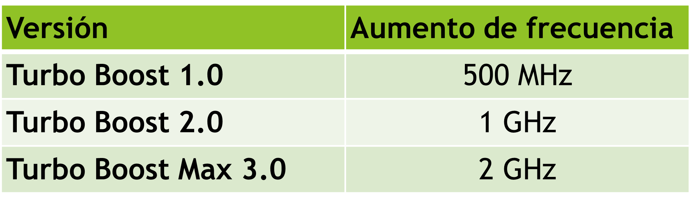
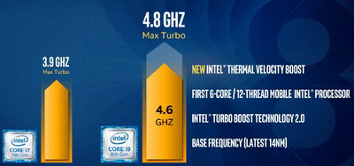
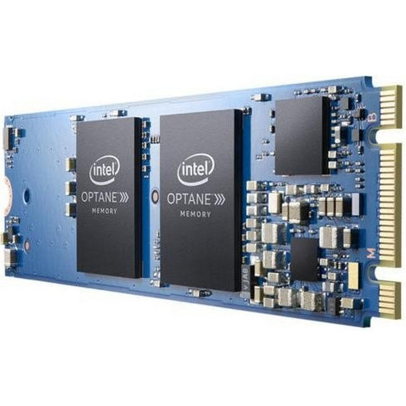
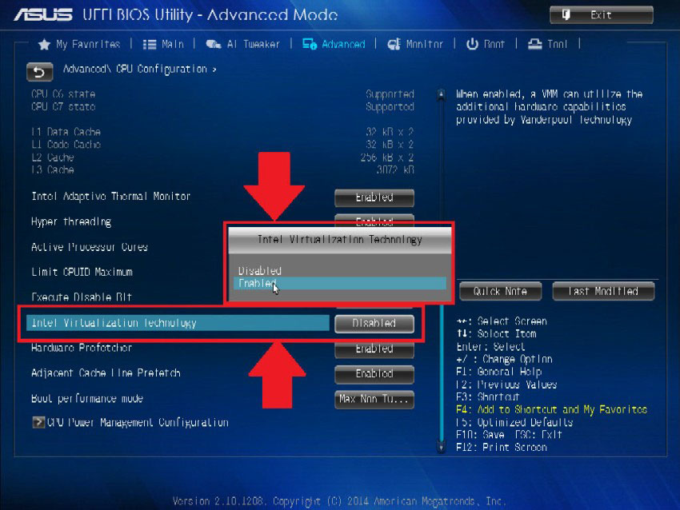

Hyperthreading
- Permite que un procesador maneje dos conjuntos de instrucciones independientes (es decir, dos procesos independientes) al mismo tiempo.
- La CPU consta de dos conjuntos de registros de propósito general y propósito específico, pero sólo tiene una ALU, una unidad de control, una memoria caché, etc.
- Nunca se obtiene el mismo rendimiento que un equipo con dos procesadores. La mejora de rendimiento es de hasta un 30%.
TurboBoost
- Se trata de analizar en tiempo real el porcentaje de ocupación de cada núcleo del microprocesador.
- En el caso de que la ocupación sea alta, aumenta automáticamente la frecuencia de reloj del núcleo.
- El aumento de frecuencia es independiente entre núcleos.
- Eleva mucho la temperatura y el consumo, por lo que cuando baja la carga o sube la temperatura de un núcleo, el sistema vuelve a bajar la frecuencia.
- Existen varias versiones:

Thermal Velocity Boost
- Tecnología complementaria a TurboBoost.
- Permite elevar la frecuencia de cada núcleo del procesador hasta 200MHz, en caso de altas necesidades de rendimiento y siempre que la temperatura de dicho núcleo sea inferior a 50 grados centígrados.

Memoria Intel Optane
- La memoria Intel® Optane™ es un tipo de memoria no volátil similar a un disco duro que se usa con el fin de acelerar el rendimiento del sistema.
- Se almacenan en ella programas y datos a modo de memoria caché para mejorar los tiempos de carga en RAM.
- Está situada entre al RAM y el almacenamiento de datos.
- Se conecta a puertos M.2 (PCI Express x4)

Tecnología de virtualización VT-X
- Permite mejorar el rendimiento de sistemas operativos ejecutados en un software de virtualización (VMWare, VirtualBox…)
- Las máquinas virtuales comparten recursos, por lo que, acceden directamente al hardware físico sin que tenga que intervenir el sistema operativo.
- Es indispensable para virtualizar sistemas de 64 bits.
- Debe habilitarse desde la BIOS del sistema.

Núcleos E y núcleos P
- Disponible desde Intel Core 12gen (Alder Lake)
- Arquitectura híbrida: usa dos tipos de núcleos
- Núcleos P (Performance)
- Más grandes en tamaño y también en potencia
- Orientados al máximo rendimiento (y mayor consumo)
- Son los únicos con Hyperthreading
- Núcleos E (Efficiency)
- Menor tamaño y potencia
- Orientados al bajo consumo (eficiencia energética)
- Se expresa el número de núcleos de los procesadores como una combinación de ambos.
- Ejemplo Intel 12900K: 8P+8E
- 8 P-Cores y 8 E-Cores. Nº hilos (threads): 2x8P + 1x8E = 24 hilos
Estados de inactividad
- Permite el ahorro de energía mediante el “apagado” de diferentes módulos del procesador en caso de que el sistema no esté siendo utilizado.
- C0- Activo
- La CPU está funcionando normalmente.
- C1- Pausa automática:
- El reloj del sistema está activado, pero no genera pulsos.
- El procesador no ejecuta las instrucciones código máquina, pero puede volver a un estado de ejecución de forma casi instantánea.
- C2- Reloj de detención:
- El reloj del la CPU está desactivado.
- El procesador necesita más tiempo para arrancar.
- C3- Reposo:
- El reloj del sistema está desactivado.
- El procesador está en estado de reposo.
- C4- Deeper sleep:
- Gran reducción de consumo eléctrico.
- Se diferencia del estado anterior en el tiempo en el que la CPU volverá a arrancar.